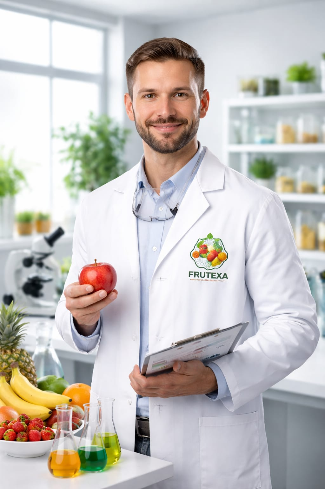

🎯 Nuestra Misión
Transformar residuos frutales en alimentos innovadores y sostenibles, reduciendo el desperdicio y el impacto ambiental mediante economía circular. Creamos valor donde otros ven desechos.
🚩 Nuestra Meta (2040)
Convertirnos en el referente global en alimentación vegetal sostenible, disminuyendo drásticamente la huella de carbono y apoyando la rentabilidad del sector agrícola.
👩🔬 El profesional del futuro: TPFSC
El Tecnólogo en Piel Frutal Sustitutiva de Carne (TPFSC) es el pilar de nuestra innovación. Un profesional que une ciencia alimentaria y conciencia ecológica.
- Transforma restos y pieles de frutas en alimentos vegetales de alto valor con textura similar a la carne.
- Domina técnicas avanzadas como deshidratación de precisión, prensado en frío y fermentación controlada.
- Su labor es clave para reducir el desperdicio alimentario y ofrecer opciones más saludables al consumidor.

♻️ El Proceso de Transformación
Aprovechamiento
Recolectamos pieles y frutas descartadas. Lo que antes era desperdicio agrícola, ahora es nuestra materia prima sostenible.
Procesamiento Tecnológico
Aplicamos procesos de limpieza, deshidratación y fermentación. Convertimos el residuo mediante ingeniería de alimentos.
Resultado Final
Obtenemos una alternativa vegetal rica en proteínas, con textura cárnica y un impacto ambiental mínimo.
📊 Valor Nutricional Estimado
(Valores medios por 100g de producto transformado FRUTEXA)
| Fruta Base | Proteínas | Grasas | Carbohidratos | Fibra | Energía |
|---|---|---|---|---|---|
| 🥝 Kiwi | 28 g | 4 g | 32 g | 10 g | 290 kcal |
| 🍎 Manzana | 26 g | 3 g | 35 g | 9 g | 280 kcal |
| 🍌 Plátano | 30 g | 5 g | 30 g | 8 g | 310 kcal |
| 🍊 Naranja | 24 g | 2 g | 33 g | 11 g | 260 kcal |
| 🍓 Fresa | 27 g | 3 g | 28 g | 12 g | 250 kcal |
| 🥭 Mango | 29 g | 4 g | 34 g | 9 g | 300 kcal |
| 🍍 Piña | 25 g | 2 g | 31 g | 10 g | 270 kcal |
| 🍇 Uva | 23 g | 2 g | 38 g | 7 g | 295 kcal |
🌍 Compromiso con los ODS
Nuestro modelo de negocio está intrínsecamente alineado con los Objetivos de Desarrollo Sostenible de la ONU.